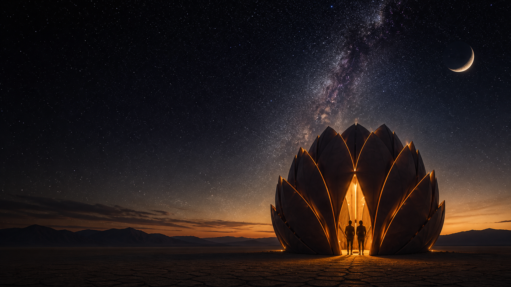
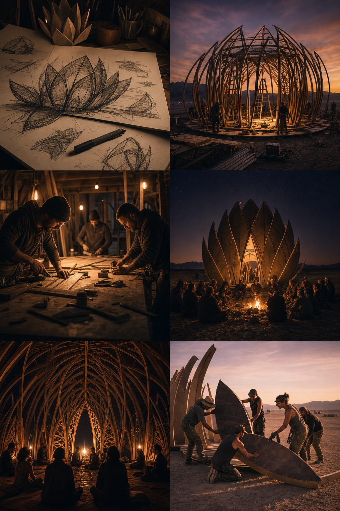

A sanctuary for stillness, reflection, and human connection.
A community-built sanctuary on the edge of silence. Created for reflection, connection, and the moments that remind us what matters.
Explore the sanctuary
Built as both a sculpture and a quiet invitation, the Sanctuary of the Silent Star offers a place to pause, breathe, and enter something more tender than the noise around us.
Thank You
Logo
Logo
Logo